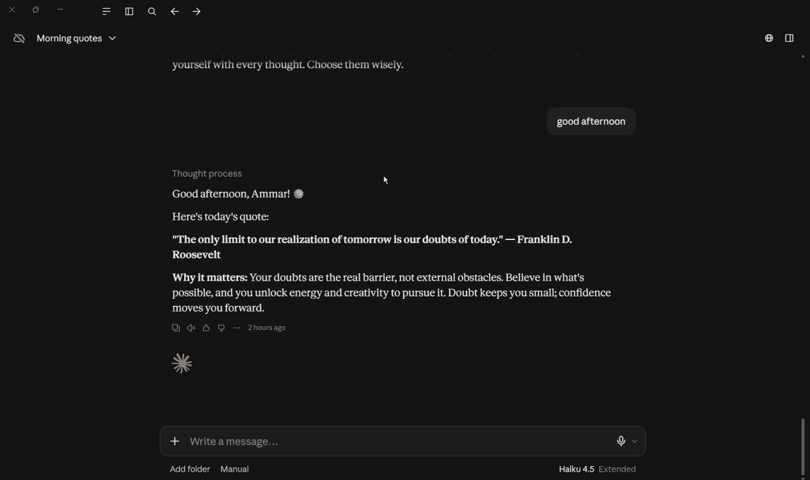

إدارة المشروع بـ Claude Code
تستخدم Claude Code وClaude في إدارة مشروعك وتنفيذه.
من الفكرة إلى مشروع منشور
وصلتكم حزمة المشروع؟
الحزمة فيها منطق المشروع وقوانينه وسياقه. أول ما تفتح محادثة Claude جوّاها، يصير مساعدك الشخصي طول المعسكر — تقدر تعتبرها نسخة مصغّرة منّي. وبنرجع لها بالتفصيل في القسم 4.
اليوم الأول أطول في الشرح من بقيّة الأيام — لأن التعريف بالمعسكر وبدليله لا يتكرّر بعد اليوم.
المدد تقريبية — والمهمة 8.1 بلا وقت مخصّص: إن أنهيت ما سبق فابدأ بها، والإكمال غدًا.
تستخدم Claude Code وClaude في إدارة مشروعك وتنفيذه.
اليوم الجلسات والرصيد؛ ونافذة السياق والضغط في اليوم 7.
اليوم نفهم الـMCP ونربط context7 وSupabase؛ والقواعد والمهارات في اليوم 5.
اليوم المرحلة 1 فقط: يعمل تطبيقك على جهازك بتسجيل دخول جاهز.
تحفظ مشروعك وتدير إصداراته من أوّل يوم.
اليوم تعريف الـMVP فقط؛ وتحديد النطاق في اليوم 2.
ما المعسكر، وما المهارات التي تخرج بها، وما الحزمة التي تستلمها، وكيف نعمل معًا كل يوم.
خارطة الأيام العشرة: أهداف كل يوم، ومهامّه موزّعة على جلسات اليوم الأربع، ومدّة كل مهمّة.
أداة Claude Code وبيئة العمل: الجلسة، والرصيد، والتكاملات، وتهيئة أدواتك.
المحتوى الفعلي لبناء منتجك — 29 مهمّة، لكل مهمّة مخرَج ومنفّذ ويوم محدّد.
كل مهمّة في الأجندة ترتبط برابط إلى قسمها المنهجي — لا تبحث، اضغط.
اكتب كل ما يخطر ببالك أوّلًا، ثم رتّبه.
لا تفكّر وتنسّق في آنٍ واحد — أفرِغ أفكارك، ثم صُغها. قاعدة تسري على كل أقسام دليل المعسكر.
من تحديد المتطلبات والنطاق، إلى التصميم والبناء والاختبار، وصولًا إلى النشر ومراجعته مع المدرب.
لن تقرأ كودًا ولن تكتبه. Claude يبني ويختبر، وأنت تصف وتقرّر وتجرّب النتيجة في الواجهة.
project-package/ ├── bootcamp_roadmap_and_curriculum.docx ├── PRODUCT.md ├── CLAUDE.md ├── .claude/ │ ├── rules/ │ └── skills/ ├── conversation_history.md ← ينشئه Claude └── app/ ← ينشئه Claude
هو جذر مشروعك — كل ما يأتي بعد ذلك يحدث بداخله.
bootcamp_roadmap_and_curriculum.docx
خارطة الطريق والمنهج.
PRODUCT.md
ملف منتجك: قراراتك كلّها في مكان واحد.
CLAUDE.md — هويّته وقواعده وسجلّ تقدّمك.
.claude/rules/ و.claude/skills/ — كيف يتصرّف، وكيف ينفّذ كل قسم.
لا حاجة بك إلى فتحها إطلاقًا.
هذه مدد تقريبية — تتفاوت من يوم لآخر بحسب ما نُنجزه فيه.
المراجعة ليست جلسة في آخر اليوم — بل إيقاع عملك كلّه.
تطلب شيئًا ← تقرأ النتيجة ← تعطي ملاحظاتك ← تنتقل. ونفصلها في الجدول لوضوح التخطيط فقط.
أي جزء من مهارات القسم 3 نحقّقه في هذا اليوم تحديدًا.
كل بند وبجانبه مدّته التقديرية، موزّعًا على جلسات اليوم.
29 مهمّة في جدول واحد: مَن ينفّذها، وفي أي يوم.
نموذج الذكاء الاصطناعي نفسه — العقل الذي يفهم ويفكّر ويكتب.
الأداة التي تعمل في الطرفية (terminal) وتصل بين Claude ومشروعك.
فيستطيع أن يقرأ ملفاتك ويكتبها، ويشغّل الأوامر، ويستخدم أدوات إضافية.
الفرق جوهري: Claude Code ليس محادثة نصّية — بل يدٌ تعمل داخل مشروعك.
محادثتك المتّصلة من لحظة بدئها حتى تُنهيها. كل ما يجري فيها يتراكم في ذاكرة مؤقّتة واحدة.
جلسة جديدة = بداية من الصفر. لا يتذكّر شيئًا ممّا سبق.
conversation_history.md يكتبه Claude تلقائيًّا، ويقرؤه في أي جلسة جديدة ليستعيد السياق.
تنبيه على المصطلح: «جلسة» تُستعمل أيضًا في حدود الاستخدام لتعني نافذة الـ5 ساعات (القسم 7.4) — والمعنيان مختلفان.
النموذج بلا ذاكرة بين الرسائل — فيُعاد إرسال كل سياق الجلسة إليه في كل مرّة.
يكبر ويثقل مع طول الجلسة.
مثل CLAUDE.md والقواعد (rules).
ولماذا؟ القسم 7.6.

من المحادثة ← Settings ← Usage: نافذة الـ5 ساعات والحدّ الأسبوعي. انقر على الصورة لإيقافها.
افتح Settings ← Usage لترى ما تبقّى لك.
اكتب /usage فترى أشرطة تقدّم لاستهلاكك ومواعيد التجديد.
أبقِ الجلسة مركّزة، وابدأ جلسة جديدة للمهامّ المنفصلة، ولا تربط MCP لا تحتاجها.
لا يوجد رقم ثابت منشور — الحدّ يعتمد على النموذج وعلى حجم كل رسالة. رسالة تقرأ ملفات كثيرة تستهلك أضعاف سؤال قصير.
كدليل تقريبي فقط: نحو 45 رسالة قصيرة في نافذة الـ5 ساعات.
من الموقع أو التطبيق: Settings ← Usage
من Claude Code: /usage أو /status
MCP = Model Context Protocol — بروتوكول مفتوح أطلقته Anthropic ليتّصل الذكاء الاصطناعي بالأدوات والبيانات بطريقة موحّدة.
برنامج يمثّل خدمة خارجية ويقدّم للنموذج ثلاث قدرات:
أدوات إجراءات ينفّذها · موارد بيانات يقرؤها · قوالب جاهزة
التطبيق الذي يستعمل الذكاء الاصطناعي — مثل Claude Code — ويتّصل بالخادم ليستفيد من قدراته.
لكل أداة تكامل مخصّص يُبنى يدويًّا. والمشكلة: كل نموذج × كل أداة = تكامل منفصل يصعب بناؤه وصيانته.
تبني خادمًا واحدًا للأداة، فيستطيع أي نموذج متوافق استخدامه مباشرةً. ولمّا لمس السوق الفائدة، دعمه كبار المزوّدين فصار معيارًا واسعًا.
توثيق محدّث
المتصفّح
النشر
المستودعات
لا «يعرف» أن أداةً متاحة إلا إذا رأى تعريفها في نفس الرسالة.
اسم كل أداة ووصفها وكيف تُستخدم — في كل أمر ترسله.
تستهلك tokens حتى قبل أن تستخدمها فعليًّا.
اربط ما تحتاجه فقط.
كثرة الأدوات تعني رسائل أثقل وأغلى وأبطأ.
الحدّ الأدنى — أقلّ ما يمكن بناؤه.
قابل للتطبيق — يعمل فعليًّا ويقدّم قيمة حقيقية، لا نموذجًا شكليًّا.
منتج — يستطيع مستخدم حقيقي أن يجرّبه ويستفيد منه.
أصغر نسخة تعمل من منتجك وتقدّم قيمة قابلة للاختبار.
تبنيها بسرعة لتتعلّم منها قبل التوسّع.
نتيجة تريد أن يحقّقها منتجك.
مثال: «تقليل أخطاء الجرد».
خاصية ملموسة ستُبنى فعلًا.
مثال: «شاشة إضافة/تعديل منتج».
وقد تخدم عدّة عناصر نطاق غايةً واحدة.
أبقِ منتجك ضمن 3 إلى 5 خصائص أساسية فقط — هذا ما يضمن أن تُنهيه.
أداة سطر الأوامر.
إلزامي على كل الأنظمة.
لمتابعة سقف استخدامك.
التثبيت وخطوات البدء.
داخل المحرّر.
أوّل مهمّة ننفّذها معًا.
البنود 1 إلى 5 تُنجزها أنت قبل أن نبدأ معًا — والبند 6 ننفّذه سويًّا.
التثبيت من PowerShell على ويندوز
افتح PowerShell والصق:
irm https://claude.ai/install.ps1 | iex
curl -fsSL https://claude.ai/install.sh | bash
أول تشغيل: تسجيل الدخول في المتصفّح ثم العودة
انتقل إلى مجلّد مشروعك واكتب claude
رسالة أن irm غير معروفة تعني أنك في Command Prompt لا PowerShell — أعِد فتح PowerShell.
ستُنشئ مستودعك وتحفظ أول نسخة من مشروعك اليوم نفسه — وبدون Git لا يتمّ ذلك.
نزّل Git for Windows وثبّته بالإعدادات الافتراضية. يمنحك Git و Bash الذي يستعمله Claude Code.
ليس مثبّتًا مسبقًا. اكتب git --version فيظهر طلب تثبيت Xcode Command Line Tools — وافق.
غالبًا مثبّت. تحقّق بـ git --version، وإلّا sudo apt install git
ضبط الاسم والبريد ثم التأكّد منهما
git config --global user.name "اسمك"
git config --global user.email "بريدك"
أو يُنسب عملك إلى هويّة خاطئة. استخدم نفس بريد GitHub.
تطبيق منفصل عن أداة سطر الأوامر، وفائدته أن يعرض لك كم تبقّى من سقفك حتى لا تُفاجَأ بتوقّف الجلسة أثناء العمل.
نزّل المثبّت وشغّله، ثم سجّل الدخول بنفس حسابك.
نزّل ملف dmg وشغّله، ثم سجّل الدخول.
نسخة تجريبية لتوزيعتَي Ubuntu و Debian.
صفحة التنزيل — اختر نظامك ثم Antigravity IDE (Standalone)
افتح antigravity.google/download ← اختر نظام التشغيل ← نزّل نسخة Standalone وشغّل المثبّت.
يلزم حساب Gmail شخصي في الفترة التجريبية.
System أو Light أو Dark — تغيّرها لاحقًا متى شئت.
File ← Open Folder واختر مجلّد الحزمة نفسه — لا مجلّدًا أعلى منه.
شاشة اختيار السمة
تحتاج أيضًا متصفّح Chrome مثبّتًا — بعض ميزات المحرّر تعتمد عليه.
كل المفاتيح مُطفأة
يأتي Antigravity بمساعد ذكاء اصطناعي خاصّ به (Gemini)، وهذه الحزم إعداداتٌ له هو — تُحفَظ في مكان مستقلّ تمامًا عن إعدادات Claude، ولا يراها Claude إطلاقًا.
نستخدم المحرّر كمحرّر فقط، وتكاملاتنا نربطها لـClaude في البند 6 وفي المهمة 14.2.
لوحة Extensions ← البحث ← التثبيت
افتح Extensions داخل المحرّر ← ابحث عن Claude Code for VS Code ← ثبّتها ← سجّل الدخول.
لوحة context7 ← API Keys
يبدأ بـ ctx7sk-
Claude هو من يكتب أمر الربط — لا تكتب أمرًا واحدًا بنفسك.
التكامل الجديد لا يعمل في الجلسة الحالية.
نموذج New project
اسم المشروع · أقرب Region · خطة Free تكفي المعسكر كاملًا.
انسخها واحفظها فورًا — لا تُعرض مرّة أخرى.
المشروع قبل الـMCP — لأن الـMCP يحتاج مشروعًا يشير إليه.
التكامل ظاهرًا متّصلًا بعد /mcp
Connect ← تبويب MCP ← العميل Claude Code
read-only مُطفأ — Claude ينشئ الجداول لا يقرأها فقط.
Storage مُطفأة — لا تمنح صلاحيات لا تحتاجها.
/mcp ← Authenticate ← وافق في متصفّحك. يحتاج هويّتك أنت.
نموذج github.com/new
المستودع يحمل وثائقك وكودك معًا.
في النموذج خيارات تبدو بريئة (مثل «أضِف README») لكنها تُسبّب تعارضًا عند رفع مشروع موجود.
اسأل Claude عمّا تتركه فارغًا — «لم أفهم ما تقصده بـ…» أمر مشروع تمامًا.
Claude يكتبها في ملف الأسرار — لا تفتحه أنت.
وربطه بقاعدة البيانات.
وافتح صفحة تسجيل الدخول.
commit ثم push.
«هيّئ هيكل تطبيقي واربطه بقاعدة البيانات. هذه مفاتيحي: […]. اعرض لي أولًا ملخّصًا بسيطًا بلا مصطلحات لأوافق، ثم نفّذه وشغّل التطبيق وأخبرني كيف أفتحه.»
التطبيق يعمل محلّيًّا وصفحة تسجيل الدخول مفتوحة
مخرَج اليوم: تطبيقك يعمل على جهازك، وصفحة تسجيل الدخول تفتح. لم يعمل من أول مرّة؟ هذا طبيعي — أخبر Claude بالخطأ وسيصلحه.
البنود 1 إلى 5.
واحفظ كلمة المرور.
context7 و Supabase MCP.
التثبيت قد يستغرق خمس دقائق أو أربعين. إن تعثّرت فارفع يدك — المدرب يمرّ عليكم ويعطي الأولوية لمن تعثّر.
واسأل عن أي حقل لا تفهمه.
ودع Claude يهيّئ التطبيق.
ثم احفظ وارفع.
الملفات ظاهرة على GitHub بعد أول رفع
Claude يحفظ ويرفع نيابةً عنك — وأنت تتأكّد من النتيجة.
ملف الأسرار .env غير مرفوع إلى GitHub.
وصفحة تسجيل الدخول تفتح في متصفّحك.
معًا في مكان واحد.
تأكّد بنفسك من صفحة المستودع.
هذه الثلاثة = يومك الأول ناجح.
بلا وقت مخصّص — إن أنهيت ما سبق فابدأ بجمع ملاحظاتك الحرّة عن فكرة منتجك. والإكمال غدًا.
ما المشكلة التي يحلّها منتجك؟ ولمن؟ وما الذي يجعله مفيدًا؟ بلا صيغة رسمية — كلام عاديّ.
«لا أعرف بعد كيف يُعرض هذا» معلومة مفيدة لا نقص. وClaude هو من يصوغ لاحقًا.
ما أنجزناه اليوم
أدواتك مهيّأة · تكاملاك مربوطان · تطبيقك يعمل · مستودعك جاهز
ما ننجزه غدًا
تعريف منتجك ونطاقه، ومستخدموه وأصحاب المصلحة — الأقسام 8 و9.